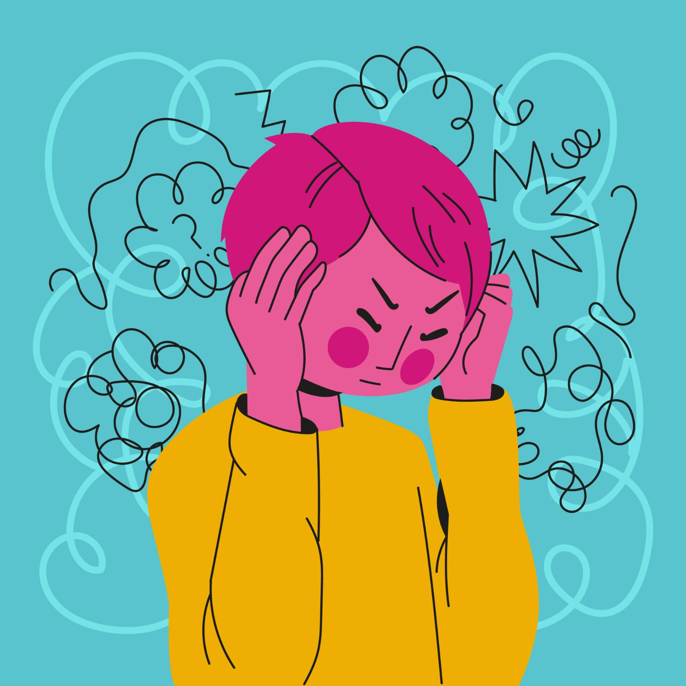
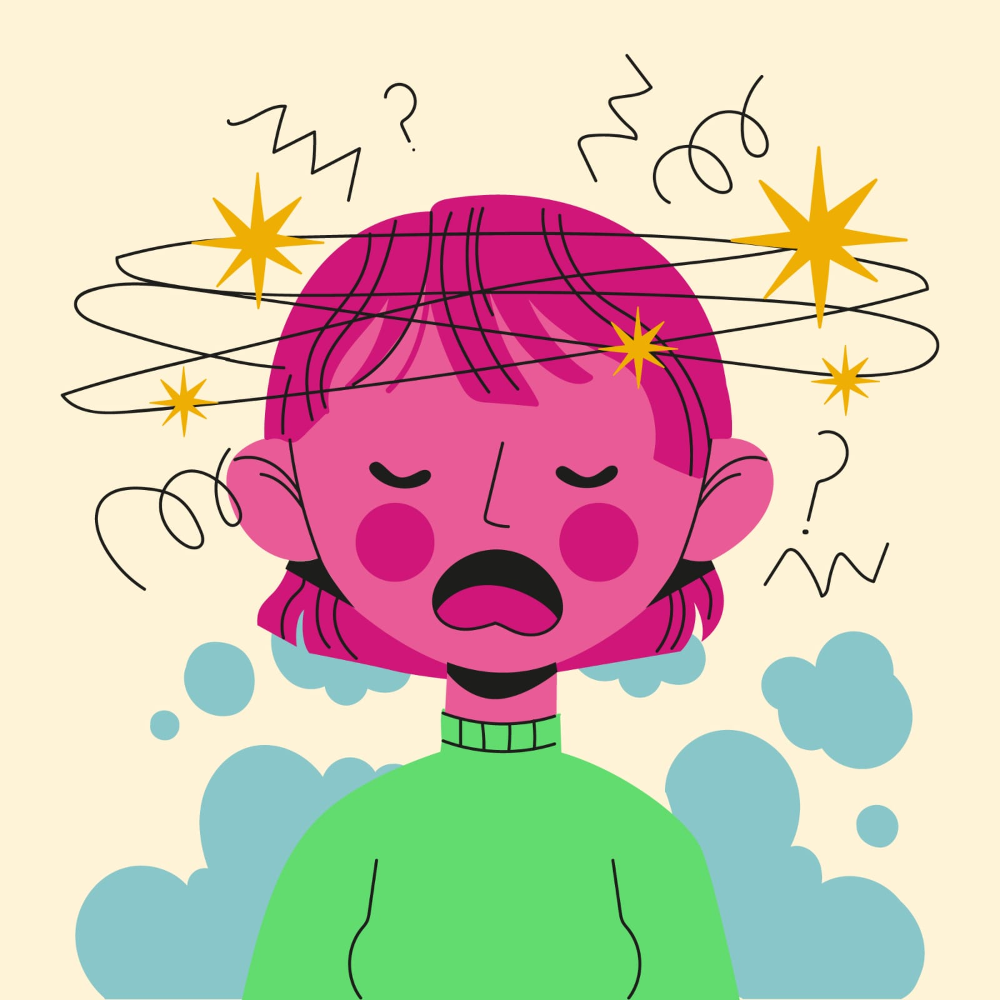

Galeria LigthBox




.jpg)
.jpg)
La ansiedad es una respuesta natural del cuerpo ante situaciones que percibimos como amenazantes o estresantes. En niveles normales es útil, ya que nos ayuda a reaccionar rápidamente. Sin embargo, cuando la ansiedad es excesiva, constante o aparece sin motivo aparente, se considera un trastorno que afecta la vida diaria.
| Tipo de ansiedad | Concepto | Significado / Descripcion |
|---|---|---|
| Ansiedad generalizada | Preocupacion constante y excesiva por distintas situaciones de la vida diaria. | La persona siente nerviosismo o tension casi todos los dias, incluso sin una razon clara. Suele acompanarse de insomnio, cansancio y dificultad para concentrarse. |
| Trastorno de panico | Aparicion repentina de episodios de miedo intenso. | Se manifiesta con ataques de panico: palpitaciones, sudor, temblores, sensacion de falta de aire o miedo a perder el control o morir. |
| Fobias | Miedo extremo e irracional a objetos, animales o situaciones especificas. | La persona evita aquello que le produce miedo (como volar, las alturas o ciertos animales), lo cual puede interferir en su vida diaria. |
| Ansiedad social | Miedo intenso a ser juzgado o rechazado en situaciones sociales. | Genera nerviosismo al hablar en publico, conocer personas nuevas o ser el centro de atencion; puede causar aislamiento. |
| Ansiedad por separacion | Miedo excesivo a separarse de personas importantes o lugares seguros. | Es comun en la infancia, pero tambien puede afectar adultos; provoca angustia al estar lejos de alguien querido o al pensar en la separacion. |